How I turned a 30-second script into a viral, fully-coded documentary reel — six scenes, one Netflix-vs-Blockbuster story, every visual beat dictated by a single spoken line.
MBy MoSidd · AI Made Easy · ~14 min read
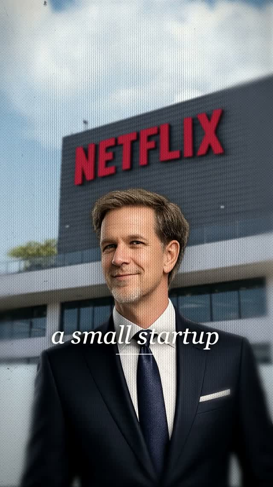
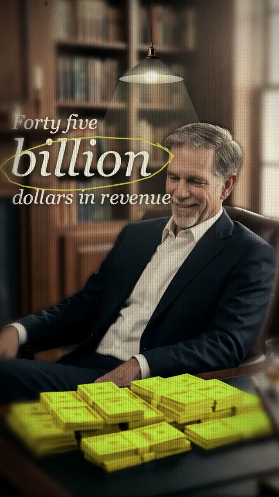
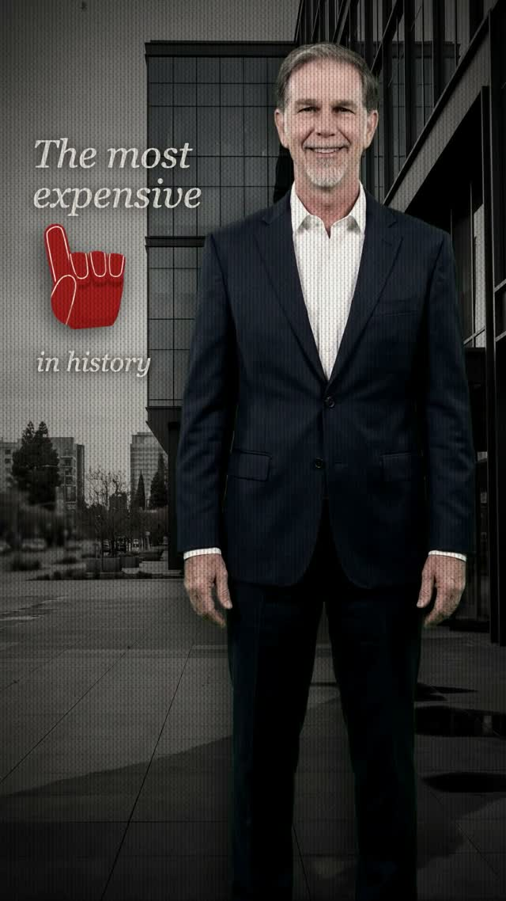
The finished reel — six coded scenes, cut to a single voiceover. No After Effects.
Everyone thinks a reel like this starts in After Effects, with keyframes and plugins. It doesn't. It starts with one paragraph of voiceover — and once that paragraph is locked, it decides everything: what's on screen, what the words say, when each shot cuts, even how long each shot lasts.
This is the exact, repeatable workflow. You'll build this whole reel by pasting eight prompts into Claude Code — a storyboard prompt, a setup prompt, and one prompt per scene. Here's the map:
The Storyboard
Before a single line of code, you write the script and hand it to Claude Code as a storyboard brief. The magic move: you don't describe visuals — you give it the voiceover, and let it derive the visuals. The words "laughed them out" force an arrogant character laughing. "Built the opposite" forces Netflix's counter-strategy on screen. "$45 billion" forces the money shot. The VO is the storyboard.
Paste this in as-is — the whole 30-second script is baked in, so there's nothing to fill in:
✦Claude CodePrompt · Storyboard
▸I'm making a 30-second vertical documentary reel that tells the Netflix vs Blockbuster story. Here's my voiceover — six lines, one per scene:
1. In 2000, a small startup called Netflix pitched Blockbuster to buy them out.2. They asked for fifty million dollars — Blockbuster laughed them out of the room.3. So Netflix built the opposite. No late fees. No stores. Customer first.4. Ten years later, Blockbuster closed down a thousand stores and declared bankruptcy.5. Today, Netflix drives forty-five billion dollars a year in revenue — the biggest paid streaming service on Earth.6. This was the most expensive 'no' in history.
Turn this into a storyboard. For every line, tell me the scene it becomes — what we're looking at, the words that go on screen (pulled straight from the line), the emotional beat, one signature animation, and the exact assets I'll need to make it. Give it to me scene by scene so I can build one at a time.
What comes back is the spine of the entire reel — one line in, one scene out. This is the beat sheet it produces, and every prompt after this one just builds a row of it:
The beat sheet
Each voiceover line → the scene it dictates, the on-screen text pulled from it, and the assets you'll need.
Beat
The voiceover line
What it becomes on screen
Assets needed
1 · Setup
"In 2000, a small startup called Netflix pitched Blockbuster to buy them out."
A framed photo of Netflix's HQ zooms straight through the frame to fill the screen; a museum plaque reads the date; a vintage film wash sits over everything. On screen: "a small startup" · plaque "In 2000"
Netflix HQ photo · young Reed cut-out · gold frame · paper wall · film grain
2 · Rejection
"They asked for fifty million dollars — Blockbuster laughed them out of the room."
An arrogant boss on a red sunburst; a cash hand and a logo swing in from opposite edges inside hand-drawn diamonds; a slot machine spins to "50 MILLION"; the screen flickers negative with a red eye-glow. On screen: "50 MILLION" · "laughed them out"
Cigar-boss cut-out · red sunburst · cash hand · Netflix logo
3 · The turn
"So Netflix built the opposite. No late fees. No stores. Customer first."
Three newspapers spring onto a wooden desk — from the left, right and bottom — and settle as the camera hunts focus. On screen: "NO LATE FEES / NO STORES / CUSTOMER FIRST" · "built the opposite"
Wood desk · three newspaper front-pages
4 · The fall
"Ten years later, Blockbuster closed down a thousand stores and declared bankruptcy."
The boss stands before a dead Blockbuster; the shot punches in with him and the store scaling together off his feet, casting a long shadow; the verdict underlines itself. On screen: "closed a 1000 stores" → "declared bankruptcy"
Blockbuster storefront · sad-boss cut-out
5 · The payoff
"Today, Netflix drives forty-five billion dollars a year in revenue — the biggest paid streaming service on Earth."
The money shot: a swinging desk lamp lights the room, cash stacks flicker gold, the camera slow-pushes — then the Netflix "ta-dum" ident plays over "the biggest streaming service." On screen: "Forty five billion" · Netflix ident
Reed stands calm and triumphant outside a glass tower; a red foam-finger wags "no" on the word itself; the verdict stacks quietly on the left. On screen: "The most expensive / no / in history"
Happy Reed (green-screen keyed) · glass-tower bg · red hand graphic
Every scene also carries the same two threads throughout: a stop-motion "posterize" judder on all motion, and the vintage film-treatment wash — both set up once in the next prompt.
You don't need an original story. This Netflix-vs-Blockbuster tale has been told a thousand times — that's fine. The magic isn't coming up with something new every time; it's taking a story that already works and telling it better than everyone else did. Scroll through viral reels, find a story that's landing, and say it sharper. Great creators aren't more original — they just retell a good story better.
The asset sheet
Every row of that beat sheet needs raw material — characters, backgrounds, props. Here's every asset that actually went into the reel, grouped by scene:
Scene 1"In 2000, a small startup called Netflix pitched Blockbuster to buy them out."
netflix HQ
young reed
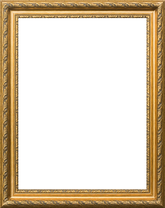
gold frame
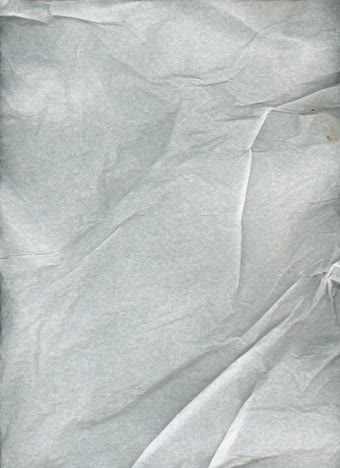
paper wall
Scene 2"They asked for fifty million dollars — Blockbuster laughed them out of the room."
cigar boss
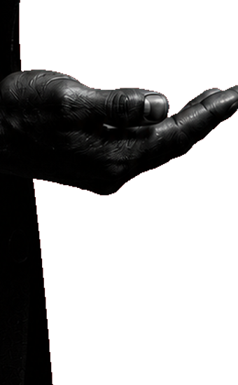
logo hand
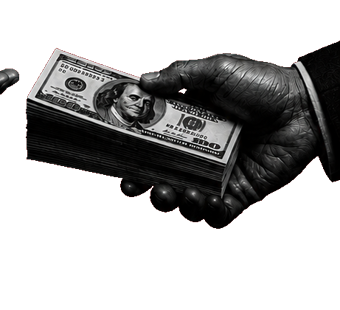
cash hand
netflix logo
Scene 3"So Netflix built the opposite. No late fees. No stores. Customer first."
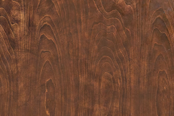
wood desk
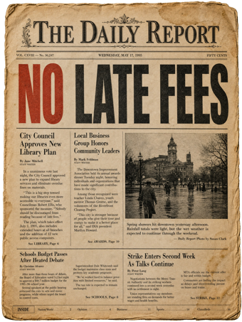
no late fees
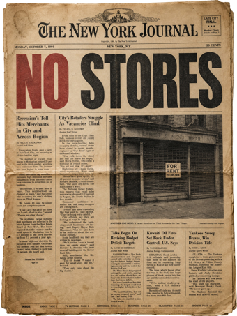
no stores
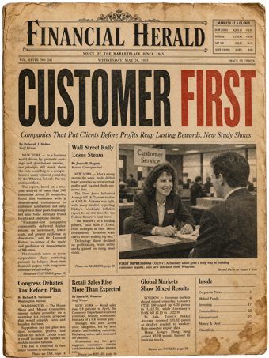
customer first
Scene 4"Ten years later, Blockbuster closed down a thousand stores and declared bankruptcy."
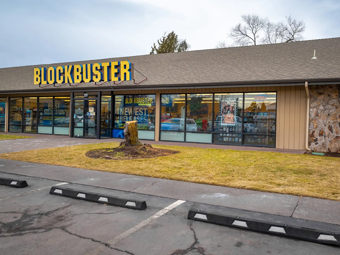
blockbuster store
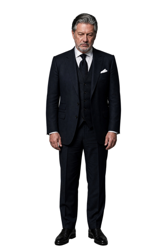
defeated boss
Scene 5"Today, Netflix drives forty-five billion dollars a year in revenue — the biggest paid streaming service on Earth."
money room
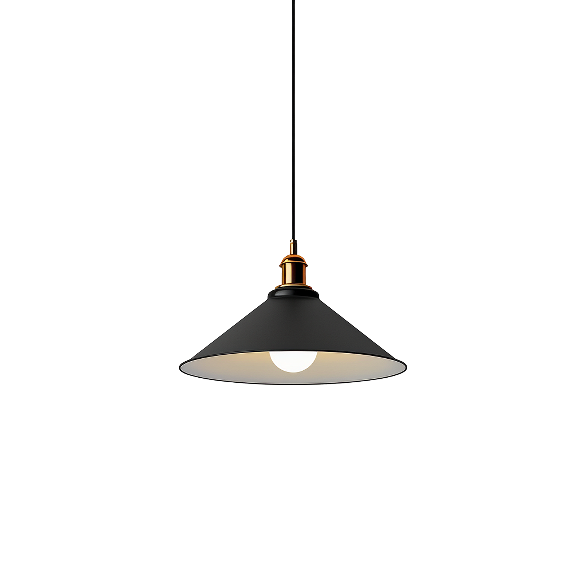
swing lamp
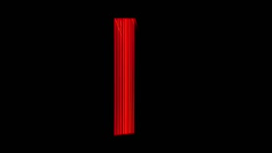
netflix ident
Scene 6"This was the most expensive 'no' in history."
triumphant reed
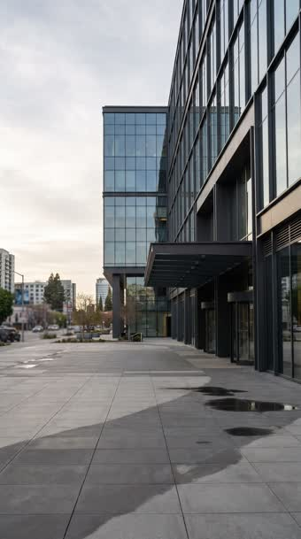
glass tower
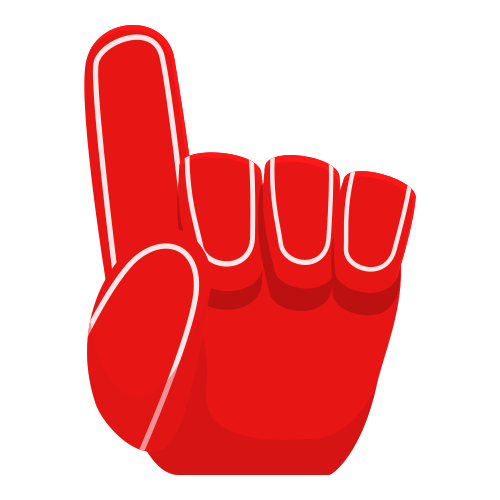
red "no" hand
Every scenethe film-treatment stack — two textures + four code effects, layered over all six scenes
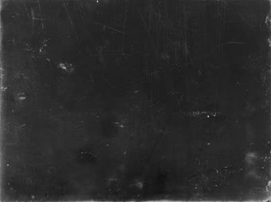
film grain
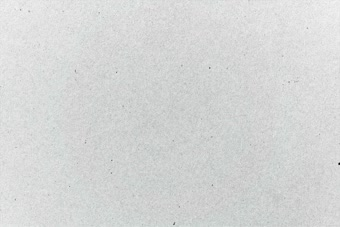
grunge wash
scan lines
venetian blinds
vignette
corner blur
Where they came from
Not a single one was drawn from scratch. Everything you just saw came from three places:
Google Images — the real photographs: Netflix's HQ, the Blockbuster storefront, the glass office tower, the wooden desk, the paper wall.
GPT Image (GPT-2), run through the Replicate API — everything that had to be invented: the characters (a young Reed, the cigar-chomping boss, the defeated Blockbuster exec, a triumphant Reed), the library money-room, and the three fake newspaper front pages. Generated, then background-removed into clean cut-outs.
Edit-pack asset collections — the finishing pieces you'd never bother to generate: the film grain and grunge washes, the gold museum frame, the desk lamp, the hand cut-outs, the red foam-finger, and the Netflix "ta-dum" ident clip.
The assets are the easy part. Notice how few there are — each scene runs on just 3–4 image assets: a background, a character, a prop or two. That's it. What actually makes the reel come alive isn't the assets; it's the animation and choreography layered on top — how things punch in, judder, swing, and land on the beat. That's what the next six prompts are all about.
00The Setup & the Engine
The storyboard tells you what to build. Before you build any of it, you set the project up once — and you build a small reusable "engine" that all six scenes pull from. Two parts to it:
A motion toolkit — the stop-motion stutter that makes everything jump in ~12-frames-a-second steps instead of gliding, plus a constant hand-held wobble and a way for things to spring into place.
A film-treatment "look" — grain, scan lines, a vignette and a warm faded grade, layered over every scene so it reads like old film instead of a clean digital render.
Two prompts handle it — one scaffolds the Remotion project and the reusable motion engine, the next builds the film look. Start with the project:
First — the Remotion project + motion engine
✦Claude CodePrompt · Remotion setup
▸Set up a new Remotion project for a vertical documentary reel — 1080×1920 at 30fps, with one composition and one file per scene so I can build and preview each on its own, plus a shared engine file that every scene imports. In that shared file, give me the motion helpers I'll reuse everywhere: a posterize-time helper that snaps the current frame to 12fps steps so movement stutters like stop-motion instead of gliding; a boil wobble; a slow drift; a pingpong oscillator; and a spring entrance for things popping into place. Set it up so I can drop each finished scene onto one main timeline later.
Then — the film look
This is the part that turns a clean digital render into something that feels like aged film. Same frame — engine off, then on:
Without → with the engine
Engine offraw · digital
Engine ongrain · scan lines · vignette
Same pixels. The right side just has grain, scan lines, a vignette and a warm grade layered on — and suddenly it's cinema.
The texture packs already live in your assets folder, so this prompt can name every layer and dial the settings in — the look comes out right the first time:
✦Claude CodePrompt · Film look
▸Build the film-treatment look — a reusable wrapper I can wrap any scene in so it reads like aged film. The textures are in my assets folder (grain.jpg, grunge.jpg). Layer these top to bottom with exactly these settings:
Scan lines: vertical lines — a 1.6px black line at 16% opacity repeating every 8px, blurred by 0.7px.Texture sandwich: grain.jpg on multiply, inverted with brightness 1.35 and contrast 1.02, at 55% opacity; then grunge.jpg on colour-burn at 16% opacity.Vignette: a radial gradient — ellipse 92% by 82% centred at 50% / 48%, clear until 55%, fading to black at 50% opacity by the edge.Grade: a colour filter of saturate 0.86, contrast 1.08, sepia 0.16, brightness 0.95 — expose those four as props so I can tweak per scene.Gate-weave: jitter the whole frame with a stepped wiggle at 12fps, about 5px of travel, and scale everything up 1.012 so the weave never reveals an edge.
Everything rides the engine's 12fps posterize step. Put a toggle on each layer so I can switch parts off.
This is the multiplier. You write it once and all six scenes inherit the stop-motion feel and the film look automatically — so every scene prompt after this can focus purely on its own choreography, never the treatment.
01Scene 1 — the opener
"In 2000, a small startup called Netflix pitched Blockbuster to buy them out."
The job of the opener is to plant Netflix as the humble underdog — and to do it with a hook that stops the scroll. The move: a black-and-white photo hangs in a frame on a museum wall, and the camera flies straight through the frame into the picture, which blooms into full colour as it lands. That's the portal zoom-through.
The whole scene is a single copy-paste prompt — here it is first, then we break down what it builds:
✦Claude CodePrompt · Scene 1
▸Build Scene 1, the opener. In the assets folder: hq-building.png (a photo of the Netflix HQ), reed-portrait.png (a young Reed cut-out), gold-frame.png (an ornate gold frame), wall.jpg (a paper museum wall). Compose a black-and-white framed photo — Reed in front of the Netflix building, inside the gold frame — hanging on the wall, with a small serif plaque reading "In 2000" beneath it. Then do a zoom that flies THROUGH the frame, with these timings (30fps):
Slow push: ease the wall from scale 1.0 to 1.16 over frames 0–46.Zoom-through: from frame 46, accelerate the wall scale up to about 6.8× by frame 76 so the camera flies into the frame.Weld: until frame 62, lock the photo + gold frame together as one unit — content scale = 0.369 × the wall scale. They must never ease apart before the detach.Detach: after frame 62, keep accelerating the gold frame out past the edges while the photo settles from 0.75 to 1.0 scale by frame 72, and cross-fade it from black-and-white to full colour.Motion blur: a full-frame blur burst ramping 0 → ~9px → 0 across frames 54 / 61 / 72, peaking at the fastest point.Wall exit: blur the wall and plaque 0 → 8px over frames 52–72 and fade them out as the zoom takes over.Drifting clouds: behind the building put cloud1.png and cloud2.png sliding slowly left — cloud1 travels from 0 to about −525px across the whole scene, cloud2 at roughly 0.6× that speed so they parallax.Character boil: keep the reed-portrait subtly alive — breathe its scale by ±0.5% on a slow sine, and sway it ±0.5° back and forth over ~140 frames, both snapped to the 12fps step so it stutters like stop-motion rather than gliding.
Then reveal serif-italic captions over the settled building — "a small startup" then "called Netflix". Wrap the whole scene in the film-look treatment and run it on the 12fps posterize step.
The portal effect · liveThe zoom-through, looping — camera flies through the framed photo and it settles into full colour.The same move, frame by frame
Framed photo → fly through the frame → the frame exits while the photo settles and turns colour.
The whole trick lives in one idea — the weld, then the detach:
Weld. Up to frame 62, the photo and the gold frame zoom as one locked unit — the content scale rigidly tied to the wall (about 0.369× the wall's scale). They move as a single object.
Detach. After frame 62 the gold frame — the nearer layer — keeps accelerating out past the screen edges, while the photo detaches and eases from ~0.75 to 1.0 scale, blooming from B&W to colour as it lands.
Never let the frame and the photo ease independently before the detach. The instant they move at different rates too early, your eye reads two flat layers sliding — not one window you're flying through. Weld them tight, detach exactly once, and add a full-frame motion-blur burst at peak velocity (~frame 61) to sell the speed.
Feel what makes it come alive
Here's the illusion up close. Both tiles are playing the same stretch of the scene — captions and all. The only difference: the left has the ambient motion switched off, the right has the cloud drift, character boil and 12fps stutter switched on. The left plays but feels dead; the right breathes. That's the whole game — the life is in the motion you barely notice.
What makes it alive · try it
Motion off
Motion on
both playing · only the right has cloud drift · character boil · 12fps stutter
02Scene 2 — the offer
"They asked for fifty million dollars — Blockbuster laughed them out of the room."
Now we flip to the villain — the arrogant Goliath. A cigar-smoking boss looms on a blood-red sunburst; a fist of cash and the Netflix logo swing in from opposite edges inside hand-drawn wireframe diamonds; a slot machine spins up to "50 MILLION"; and at the end the whole frame flickers to a negative with a red glow burning in his eyes. But the detail that makes him feel real is the smallest one — the smoke curling off his cigar.
The whole scene is a single copy-paste prompt — here it is first, then we break down what it builds:
✦Claude CodePrompt · Scene 2
▸Build Scene 2, the offer. Assets: boss.png (a cigar-smoking boss cut-out), netflix-logo.png, hand-left.png / hand-right.png (a hand holding the logo, a hand holding cash), smoke.mp4 (a smoke plume shot on black). Backdrop is a red sunburst — a deep radial gradient from #a01218 through #7c0d12 to #58080c, with faint rays. Beats (30fps):
Boss: rises up with a spring around frame 84, punches in to 1.09× scale over frames 96–116, and holds with a gentle back-and-forth sway.Cigar smoke: overlay smoke.mp4 with mix-blend-mode screen so the black drops out, then crush its contrast to true-black the lifted background and feather the top edge with a mask gradient so the plume trails off. Anchor its base to the cigar ember, fade it in, and move it with the boss so it stays glued to the cigar.The two props: the logo hand slides in from one edge around frame 17, the cash hand from the opposite edge around frame 47 — each framed by a hand-drawn wireframe diamond that draws on with a dashed stroke and wobbles on an 8fps boil."50 MILLION": a slot-machine reel spins values past (billion / dollars / trillion) from frames 72–82 and slams to a stop on MILLION.Yellow caption: a marigold caption box pops "laughed" then "them out" over frames 130–163.The punctuation: at frame 165 flicker the whole frame to a hold-keyframe negative (invert + hue shift, a few 2–3 frame bursts); at frame 174 push the boss to black-and-white and burn red light-ray glows out of his eyes.
Wrap it in the film-look treatment and run everything on the 12fps posterize step.
The cigar smoke — the screen-blend trick
The smoke is a real clip of smoke shot against black. You can't just lay it over the scene — the black rectangle would blot out everything behind it. Screen blend fixes most of it: it keeps only what's brighter than the layer beneath, so the black drops out. But real footage isn't pure black — the background is lifted just enough that screen alone leaves a faint grey box and a hard top edge where the plume gets cut off. So we do two more things: crush the contrast to push that near-black to true black, and feather the top edge with a mask so the smoke trails off into nothing instead of hitting the video frame. Cycle the three stages:
Cigar smoke · screen blend · try it
3 · screen + crush + feather
screen drops pure black · crush kills the lifted grey · mask feathers the top edge
Screen blend is the workhorse for anything shot on black — smoke, fire, sparks, light leaks, lens flares. But screen only nukes pure black, so pair it with a contrast crush to true-black the lifted background and a mask to feather the edges — then anchor the base to the source (here, the cigar ember) and let it drift. That trio (screen + crush + feather) is the whole recipe for dropping any on-black plate into a scene with no masking or rotoscoping.
↺ A reminder — tune it in Studio
Quick note to self (and you): a scene never looks right straight out of the prompt. Every one of these scenes is prop-controlled — the punch scale, the shadow angle, the hand position, the grade are all exposed as sliders. So before moving on, open Remotion Studio, scrub to the exact beat you care about, and drag the values live until it lands. Hit Save and they write straight back into the code. This "eyeball it in Studio" pass is where most of the polish actually happens.
Remotion Studio · live prop tuning
netflix-reel · remotion studio▶ Render
Compositions
MasterReel2
Scene1
Scene3
Scene5
Scene4
Scene2
Scene6
00:19:1400:24:00
Props · Scene4
1.7
−53
0.55
1.2
warm · 0.62
Save ↵
Drag a slider, watch the frame update instantly, hit Save — the value writes back into the scene's code.
03Scene 3 — the opposite
"So Netflix built the opposite. No late fees. No stores. Customer first."
Three promises in one breath, so we give them three headlines. On a dark wooden desk, three vintage newspapers drop in one after another — NO LATE FEES, NO STORES, CUSTOMER FIRST — each sliding in from a different edge and settling with a little bounce. The whole scene is a lesson in choreography: same move three times, but staggered and from different directions so it reads as a deliberate stack, not a pile-up.
The whole scene is a single copy-paste prompt — here it is first, then we break down what it builds:
✦Claude CodePrompt · Scene 3
▸Build Scene 3, the opposite. Assets: wood-desk.jpg (a dark wooden desk) and three newspaper front-page cut-outs — news-latefees.png ("NO LATE FEES"), news-stores.png ("NO STORES"), news-customer.png ("CUSTOMER FIRST"). Open on the desk with a quick focus-hunt (a blur clearing over the first ~14 frames) and a slow Ken-Burns push. Then drop the three papers on one at a time — each springs in on a soft spring (low stiffness ~42, a bit of mass ~1.1, so it glides in over ~0.9s and settles with a small bounce rather than snapping), scaling from 1.1 down to 1.0 as it lands, with a subtle stop-motion boil. Timings (30fps):
NO LATE FEES: slides in from the LEFT at frame 20 — starts way off-screen left and low, rotated ~−26° — and settles around x470 / y980 at −7°.NO STORES: drops from the RIGHT at frame 60, landing on top around x620 / y940 at +6°.CUSTOMER FIRST: rises from the BOTTOM at frame 100, landing on top at x540 / y1010 at −3°.Caption: a serif-italic "built the opposite." at the top that fades in early and out by frame 48.
Vignette the desk, wrap it in the film-look treatment, and run everything on the 12fps posterize step.
The slide-in · watch it
three papers · three directions · staggered ~1.3s apart
Stage by stage
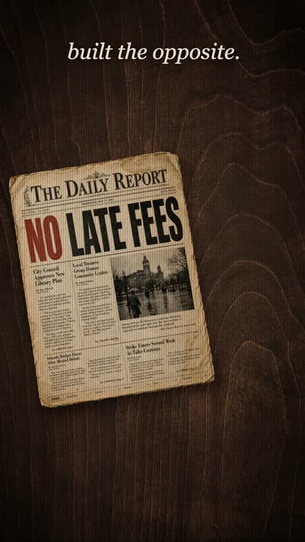
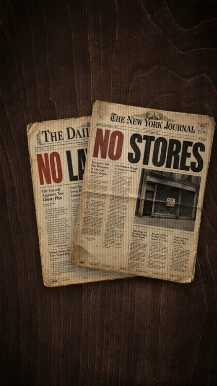
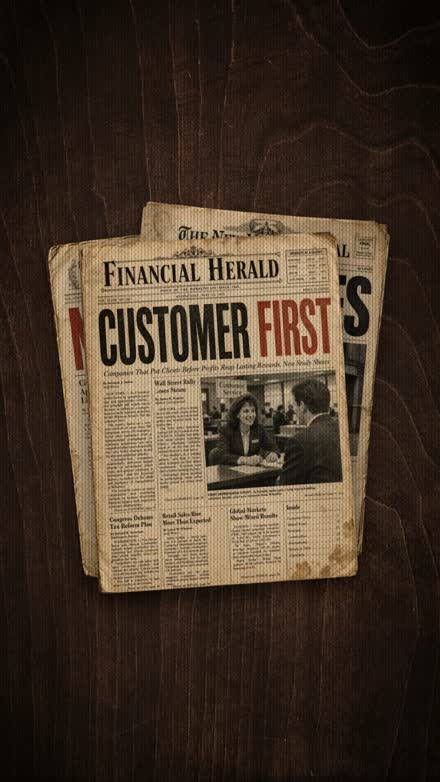
NO LATE FEES · from leftNO STORES · from rightCUSTOMER FIRST · from bottom
One paper at a time, each landing on top of the last — the stack builds with the voiceover.
Stagger and vary the direction, or it reads as a glitch. If all three flew in together from the same edge, your eye couldn't separate them. Space them ~1.3s apart (one per spoken promise), send each from a different edge, and give each a soft spring — low stiffness with a touch of mass — so it glides and settles instead of snapping. That "deliberate hand placing them down" feel is the whole effect.
04Scene 4 — the fall
"Ten years later, Blockbuster closed down a thousand stores and declared bankruptcy."
The saddest beat gets the simplest trick. A lone Blockbuster exec stands outside a dying store, and the whole shot is built from just two flat cut-outs — the man, and the storefront behind him. To sell depth, both zoom at once, but the man punches in harder than the wall, so he peels forward off the building in fake 3D. And the shadow pooling at his feet? That's not a third asset — it's the same man cut-out, painted black, flipped down and laid on the ground.
The whole scene is a single copy-paste prompt — here it is first, then we break down what it builds:
✦Claude CodePrompt · Scene 4
▸Build Scene 4, the fall. Assets: blockbuster-bg.png (a dying Blockbuster storefront) and sad-man.png (a cut-out of a grim exec in a suit). Both are flat plates — sell depth by animating them, not by adding layers. Anchor everything to one ground point at the man's feet (about x560 / y1690). Timings (30fps):
Grounded parallax punch: push the building from scale 1.0 to 1.12 over frames 8–80, easing out. Over frames 0–58 punch the man in harder — up to about 1.7× and drifting toward camera — scaling him around his feet, not the frame centre. The man growing faster than the wall is the whole depth illusion.The shadow is the man: duplicate the sad-man cut-out, paint it pure black, flip it straight down from his feet and skew it about −53° so it lies along the ground; blur it 7px and drop it to 55% opacity. No separate shadow asset.Left line: stack "closed a / 1000 / stores" in serif italic on the left from frame 24, one line every ~6 frames, then fade it back to about 30% as the man moves.The shift: around frame 60 slide the man ~235px to the left with a motion-blur streak that peaks mid-move, clearing the right side.Right line: reveal "declared bankruptcy" on the right over frames 70–78, draw a hand-drawn yellow underline on beneath it, and tighten a focus vignette around it so the eye lands there.Grade: desaturate this one further than the others — saturate 0.62, contrast 1.12, sepia 0.06, brightness 0.94 — for the sombre beat. Then the shared film treatment and the 12fps posterize step.
The fall · watch it
one PNG for the man · the same PNG for his shadow
There's a second copy of his cut-out hiding directly behind him. Turn it into his shadow with three moves — do them in order and watch him become his own shadow:
Interactive · turn the man into his shadow
Stage by stage
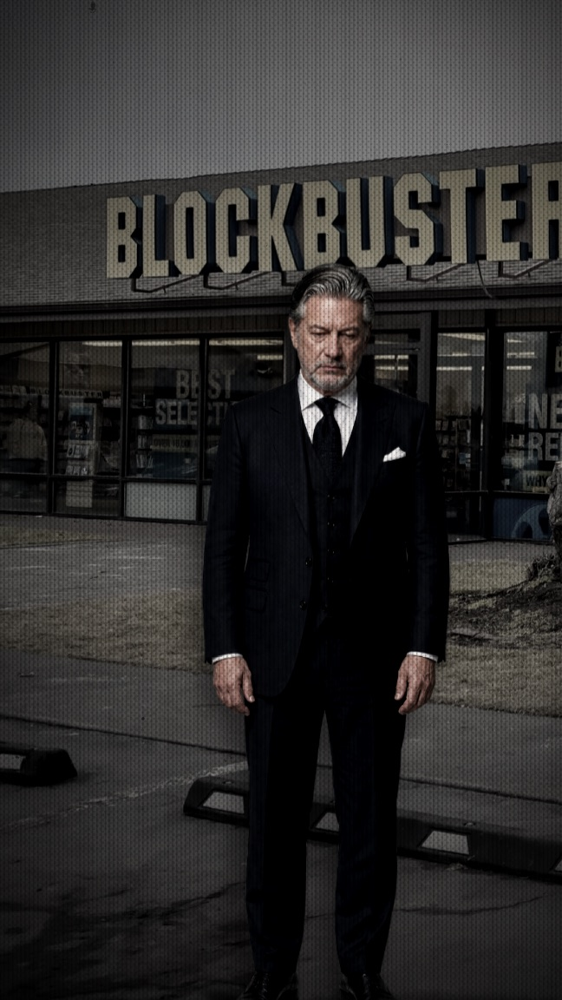
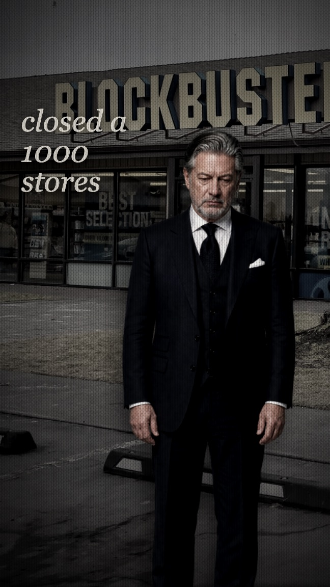
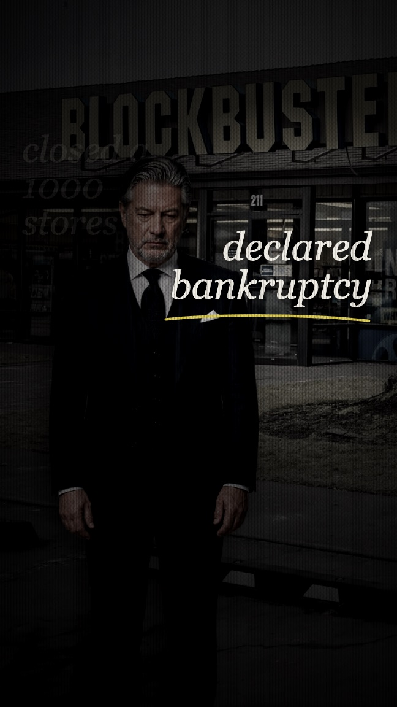
stand · two platespunch · "closed a 1000 stores"shift · "declared bankruptcy"
One camera push, but the man punches harder than the wall — then he slides left to clear space for the final line.
Anchor both zooms to the same point on the floor. The building grows to 1.12× and the man to 1.7× — but both scale around his feet, one fixed ground point, not the centre of the frame. That shared anchor is what reads as a single camera pushing into a real space instead of two images resizing. Miss the anchor and the man slides off the pavement.
05Scene 5 — the payoff
"Today, Netflix drives forty-five billion dollars a year in revenue — the biggest paid streaming service on Earth."
The money shot. Reed leans back in a leather chair under a warm hanging lamp, forty-five billion dollars stacked on the desk in front of him. It's built from flat photo plates again — but two things sell it, and neither is in the photo: the lamp's light is drawn entirely in code, and the glowing cash is the same duplicate-and-recolor trick as the shadow, flickered on like a fluorescent tube.
The whole scene is a single copy-paste prompt — here it is first, then we break down what it builds:
✦Claude CodePrompt · Scene 5
▸Build Scene 5, the payoff. Assets are five flat plates from one PSD: office-bg.png (a study with a bookshelf), office-char.png (Reed in a chair), office-desk.png (desk with stacked cash), office-cash.png (just the cash, cut out) and lamp.png (a hanging lamp). Stack them bg → character → desk. Timings (30fps):
Lamp light (drawn, not photographed): at the lamp's bulb (~x590 / y345) stack four soft radial gradients on screen blend — a small white-hot core, a wider warm bloom halo, a flat glow at the shade mouth, and a big faint ambient spill. Also send one blurred funnel beam down behind the character to catch the bookshelf, with its hard edges faded off by a side mask. Parent all of it to the lamp and swing the whole thing gently (~±3° over ~2s) so the light sways with the pendulum.Make the light respond to focus: when the lens defocuses, bloom the hot core to about 2.4× into a soft bokeh disc and grow the halo — otherwise the glow looks untreated through the blur.Cash highlight: duplicate the cash cut-out, recolor it bright chartreuse with sepia 1 / saturate 5 / hue-rotate 18°, and flicker it on with hold-keyframes (instant on/off, no fades): on frames 23–28, off 29–31, on 32–61, off 62–63, on 64–71, then gone.Headline: serif-italic "Forty five / billion / dollars in revenue", the words fading up staggered from frame 9 to 54, with a hand-drawn yellow pencil oval that scribbles on around "billion" over frames 31–40.Camera: a vintage focus-hunt — open wide at 0.88× and defocused, whoosh in to 1.0 as focus clears by frame 21, dip out of focus again around 43–63, then creep slowly to 1.08 on the money shot. Grade saturate 0.82 / contrast 1.06 / sepia 0.14 / brightness 0.93, then the film treatment and 12fps posterize.
The payoff · watch it
an unlit photo · light & highlight added in code
The lamp in the plate is just a dark prop — none of its light is in the photo. The bulb glow, the cone of light spilling down the bookshelf, and the soft ambient fill are all painted in with soft radial gradients on screen blend. Flip it on:
Interactive · the light is drawn in code
Unlit plate — a lamp, but no light.
The light has to react to the camera, or it looks pasted on. Soft gradients are blur-invariant — run a lens blur over one and you get back the same soft glow, so during the shot's focus-hunt the light would look untreated. The fix: when the lens defocuses, grow the glow into a soft bokeh disc. Real defocused highlights expand; faking that is what makes drawn-in light feel photographed.
The cash highlight is the shadow trick again: take the desk's own cash cut-out, recolor it chartreuse (sepia(1) saturate(5) hue-rotate(18deg)), and blink it on with hold-keyframes — instant on/off, no fades, like a fluorescent tube warming up. Run it:
Interactive · flicker the cash
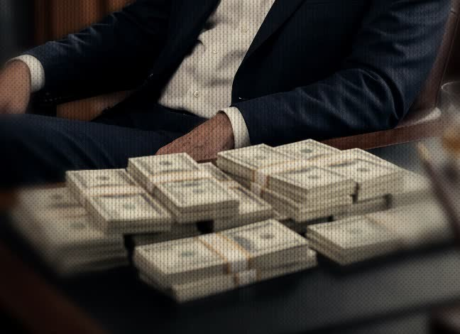
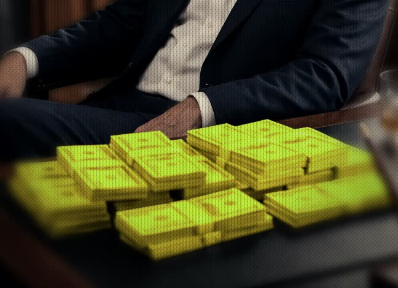
hold-keyframes · on 23–28 · off 29–31 · on 32–61 · off 62–63 · on 64–71
The shot doesn't cut in — it hunts focus like an old lens, blooming the lamp as it defocuses, then settles on the cash.
06Scene 6 — the “no”
"This was the most expensive ‘no’ in history."
The finale is the smartest scene in the reel — because it's barely a new scene at all. It's Scene 4, cloned. Same parallax punch anchored to the feet, same cast-shadow-is-the-character, same camera push, same film stack. I changed three things: the character (the sad exec becomes a happy, hands-folded Reed on the dead Blockbuster street), the words, and — instead of a payoff word — a red foam finger that swings in and wags “no.”
The whole scene is a single copy-paste prompt — here it is first, then we break down what it builds:
✦Claude CodePrompt · Scene 6
▸Build Scene 6, the finale, by cloning Scene 4 — keep the parallax punch anchored to the feet, the cast shadow, the camera push, the film treatment and the posterize exactly as they are. Then reskin it. Timings (30fps):
Swap the character: replace the sad exec with happy-reed.png (a smiling, hands-folded Reed) and fix his aspect ratio — he's taller and narrower than the old cut-out (about 2752×1536 instead of 3072×2048). Put him on street-bg.jpg, the emptied-out Blockbuster street. Keep him centred this time — no shift.Swap the words: stack "The most / expensive" on the left from frame 8, and fade "in history" in on the left around frames 40–48.The “no” gesture (the new part): around frame 24 bring a red foam finger (red-hand.svg) up from the bottom-right — slide it in and scale it from 0.72 to 1 over ~12 frames — then wag it left-right about the wrist like it's saying "no": a decaying swing, roughly 28° × cos(t × 0.52) × e^(−0.042t). Render it in front of Reed, about 250px, sitting under the left caption.Keep everything else identical: grade saturate 0.62 / contrast 1.12 / sepia 0.06 / brightness 0.94, the punch to 1.7× by frame 58, the shadow skewed −53° at 55% opacity, and the 12fps posterize.
The “no” · watch it
Scene 4's rig · a new character · a wagging finger
Here's the proof it's the same scene. This is one frame of the punch — swap the character and you flip straight from Scene 4 to Scene 6. Same pose, same shadow, same framing:
Interactive · same rig, new character
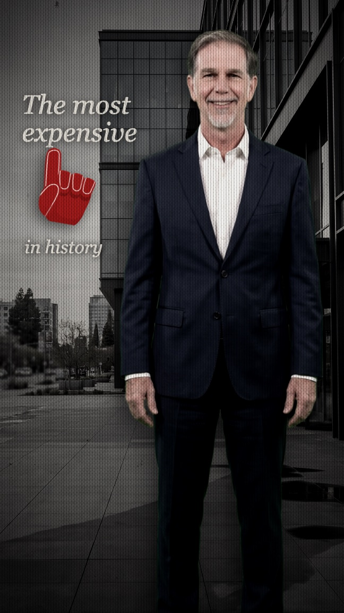
Scene 4 · the fall
Same punch · same cast shadow · same framing — only the character and words change.
Once you've built one good reveal, the rest are reskins. Scene 6 didn't need a new mechanic — the punch, the shadow, the camera and the treatment were already solved in Scene 4. Cloning the file and swapping the character (plus its aspect ratio, since Reed is taller and narrower) and the copy is a five-minute scene. That's the real payoff of coding your reel: reuse is free.
The one genuinely new part is the gesture. Instead of a word, a red foam finger swings up from the bottom-right and wags “no” — a damped pendulum about the wrist, so it swings hard, then settles. Give it a go:
Interactive · wag the “no”
rotate = 28° × cos(t × 0.52) × e−0.042t — a decaying swing about the wrist
Stage by stage
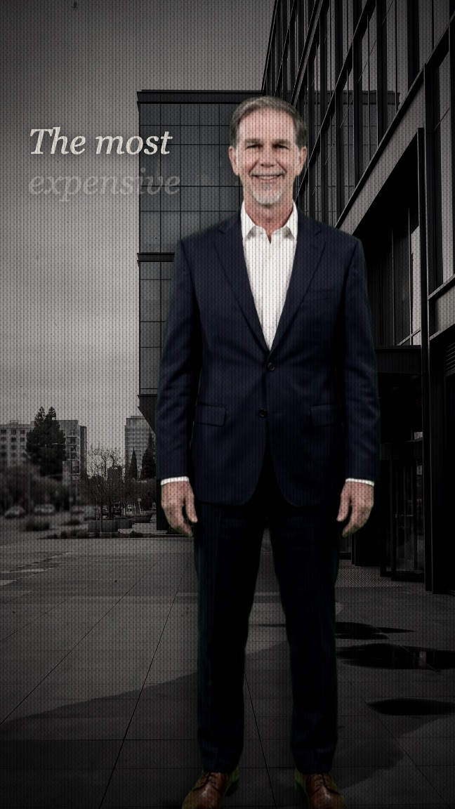
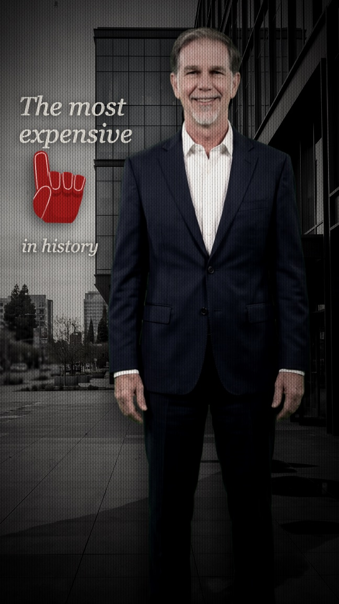
stand · same rigpunch · the finger wagssettle · "in history"
Same choreography as Scene 4, beat for beat — the only new element is the wagging “no.”
07The sound
Three layers of sound, none of them touched until the last frame was drawn.
The picture is only half the reel. Three audio layers finish it: the voiceover — generated, never recorded — the sound effects punched onto the beats, and a music bed under everything. Press play on each.
The voiceover — ElevenLabs
The whole reel is timed to this one file. I didn't record a word: I pasted the six lines into ElevenLabs, picked a documentary-narrator voice, and generated it in one pass. That 30-second MP3 is the spine — every scene's length was cut to fit its gaps.
✦ElevenLabsVoiceover
▸Paste the six-line script into Text-to-Speech and generate the whole VO in one go — no mic, no recording booth.
Voice: "Hey It's Brad — Clear Narrator for Documentary" — calm, even, a touch of warmth.Model: Multilingual v2.Settings: stability 50, similarity 75, style 11 — steady enough to trust, expressive enough to sell the story.
Export the MP3. This becomes the timeline — I cut every scene to the pauses between these lines.
vo.mp3 · the full six-line narration
0:00
The sound effects — ElevenLabs
Every whoosh, shutter and cha-ching is a generated effect. In ElevenLabs' sound-effects mode you describe the sound in words and it makes it; then I trimmed each one to its attack so it lands exactly on the beat. Press any to hear it:
✦ElevenLabsSound effects
▸Generate each effect from a short text description in Sound Effects mode — keep them tight and punchy:
Whooshes: "fast cinematic whoosh transition" — a long one for the zoom-through, a quick one for pans.Camera shutter: "vintage camera shutter, single snap" — for the museum-photo opener.Cha-ching: "bright cash register cha-ching, short" — for the forty-five billion hit.Neon buzz: "flickering neon light buzz, electrical hum" — sits under the swinging lamp.
Then trim each clip to its attack so the hit is on the beat, never a frame early.
The music — a library track
The score is the one thing I didn't generate. I browsed a music library for a track that climbs from quiet-underdog to triumphant, landed on "Choose Your Path — Positive Vibe," and tucked it low under the voiceover so it lifts the emotion without ever fighting the words. Here's a 35-second taste:
music.mp3 · "Choose Your Path — Positive Vibe" (preview)
0:00
Mix so the words always win. The voiceover sits on top at full level; the music ducks well underneath it and only swells in the gaps between lines; each SFX punches through for a beat, then ducks back out. Get that balance wrong and all the emotion just reads as noise.
30s
Runtime
9:16
1080 × 1920
6
Coded scenes
0
After Effects
8
Sound effects
1
Voiceover
The whole trick
Write the voiceover first — it's the source code. Then prompt Claude Code to build each scene in Remotion, one prompt per scene, reusing a single film-look engine. Generate the VO and the effects in ElevenLabs, tuck a library track underneath, and render. No After Effects, no timeline scrubbing — just words turned into a reel.
Takeaways
The voiceover is the source code. Every visual beat is dictated by a spoken line — write and lock the script before you touch a scene.
Build the film-look engine once. The grade, grain, scan lines and 12fps posterize are one reusable stack every scene gets wrapped in — consistency for free.
Fake depth and light in code. Grounded parallax punches, a cast shadow that's just the character reused, screen-blended lamp glows — none of it needs a plugin.
Clone, don't rebuild. Once one reveal works, the rest are reskins — Scene 6 is Scene 4 with a new character and a wagging foam finger.
Tune it live in Studio. Expose every value as a prop and eyeball it in Remotion Studio instead of guessing numbers in code.
Generate the audio too. The VO and SFX come out of ElevenLabs, a library track sits underneath, all mixed so the words always win.